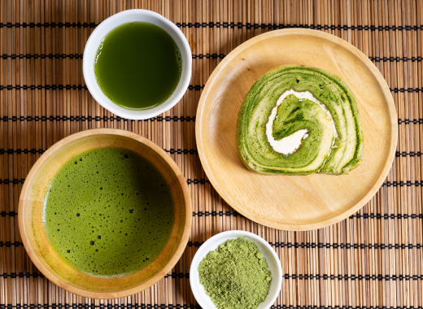

周辺観光

お茶摘み体験
茶摘み衣装を着てお茶摘みができます。お子様サイズから用意があるため、グループ全員で同じ格好で楽しむことができます。お茶摘み体験の後には、煎茶のオリジナルソフトクリームもおすすめです！
【茶摘み体験可能期間】2023年 4/15(土)～7/2（日）
※要予約2023年 9/15(土)～10/29（日）
※要予約【茶摘衣装レンタル】あり（料金に含むため別途予約不要）
MACCHA Cafe
抹茶の香りを存分に楽しんでいただけるよう厳選した抹茶を仕入れています。アイスやホット様々なメニューで抹茶をお楽しみいただけます。
【営業時間】
平日 10:00~22:00
土日祝日 10:00~22:00
抹茶蕎麦屋
抹茶の香りが蕎麦と絶妙に組み合わさり、抹茶独自の風味を味わうことができます。
【営業時間】
平日 10:00~20:00
土日祝日 10:00~21:00
※水曜定休日

抹茶処
静岡産の抹茶で作ったお菓子を多く取り揃えた和カフェ。本格的な抹茶も堪能いただけます。事前予約でお茶を立てる体験もできます。
【営業時間】
平日 10:00~20:00
土日祝日 10:00~21:00
※水曜定休日